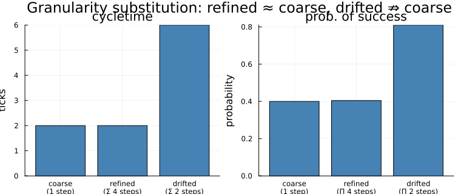

Composition & granularity — the granularity ladder
What this covers. How a model is assembled from smaller models, and how one coarse transition is substituted by a finer sub-model without the rest of the network noticing. This is the vertical axis the flat authoring surface (transitions, modalities, the allocator) is silent on: compositionality and levels of granularity. We author a pharma R&D pipeline coarsely for fast what-if, then zoom into one bottleneck when we need fidelity there — and we finish on the guarantee that makes the zoom trustworthy.
Who this is for. Readers comfortable with the introductory tutorial who want the structural operators. We stay in the classical regime — every phase is a plain counted pool — so the refinement mechanics are the star and every block runs fast.
The one invariant to hold onto. Every operator here is authoring-time: it rewrites a static ReactionNetwork before it is constructed into a runnable problem, and it reindexes the store as it does so. That makes the whole layer forbidden on a live, stepping model — you compose, refine, and abstract a network, and only then hand the result to ReactionNetworkProblem. The theory (open-port semantics, the FK-repoint that makes species-identification cheap, the plug-compatibility invariants) lives in the normative operational-semantics contract §11 and ADR 0009; here we exercise the operators.
using ReactiveDynamics
using Printf
using Plots # inline figuresA handful of internal store accessors let us look inside a network to check our work. They are not part of the modeling surface — they read the typed struct-of-columns store (row ids, the promoted reactant-incidence table) so we can assert an operator did what it claims. We import them explicitly to keep that boundary visible.
using ReactiveDynamics: nrows, row_ids, find_index, reactant_specs, specname,
populate_reactant_specs!, port_role
const RD = ReactiveDynamicsReactiveDynamicsThe structural signature of a named transition — its cycletime, probability-of-success, and the reactant rows read off the promoted incidence table as (species name, side, stoich). Two transitions with equal signatures are structurally identical; keying by transition name (not row index) makes the comparison robust to the row-reordering that composition and refinement perform. We use it to prove plug-compatibility in §4.
function trans_signature(m, tname)
ti = findfirst(i -> m[i, :transName] === tname, collect(row_ids(m, :T)))
ti === nothing && return nothing
rows = sort(
[
(string(specname(m, r.species)), r.side, r.stoich)
for r in reactant_specs(m) if r.trans == ti && r.species > 0
]
)
return (ct = m[ti, :transCycleTime], pos = m[ti, :transProbOfSuccess], reactants = rows)
endtrans_signature (generic function with 1 method)1. Manual composition: @join and @equalize
The lowest rung. @join takes the union of two networks' species, transitions, and parameters (and their events and observables), optionally identifying shared species across the two via equations. @equalize collapses two species within one network into a single pool and rewrites every reference. Both are the manual, no-declared-ports path: you name the species to identify by hand. Both operate on a static network, before construction.
Two reaction sub-systems each consume a shared resource A; we join them, identifying the two As as one pool, and count the parts of the merged network.
acs1 = @reaction_network begin
1.0, A --> B, name => t1
end
acs2 = @reaction_network begin
1.0, A --> C, name => t2
end
joined = @join acs1 acs2 acs1.A = acs2.A = @alias(A)
println("@join acs1 acs2 (identifying the shared species A)")
println(
" species in join : ", nrows(joined, :S),
" (union {A,B,C} ⇒ 3; the two A's merged into one)"
)
println(" transitions : ", nrows(joined, :T), " (1 + 1, none lost)")@join acs1 acs2 (identifying the shared species A)
species in join : 3 (union {A,B,C} ⇒ 3; the two A's merged into one)
transitions : 2 (1 + 1, none lost)@equalize collapses two conceptually-identical species A and A2 into one pool.
eqacs = @reaction_network begin
1.0, A --> B, name => t1
1.0, A2 --> B, name => t2
end
before_S = nrows(eqacs, :S)
equalized = @equalize eqacs A = A2
println("@equalize eqacs A = A2 (collapse A and A2 into one pool)")
println(
" species before : ", before_S, " → after : ", nrows(equalized, :S),
" (dropped by exactly 1; references rewritten)"
)
println(" transitions : ", nrows(equalized, :T), " (preserved; only :S was touched)")@equalize eqacs A = A2 (collapse A and A2 into one pool)
species before : 3 → after : 2 (dropped by exactly 1; references rewritten)
transitions : 2 (preserved; only :S was touched)@join/@equalize work, but they make you remember which names to identify. The next rung declares the boundary once, on the fragment, and lets composition match it.
2. Declared open ports: @process / @port / @compose
A fragment is a named, parameterized model factory. @process name(params…) = begin … end writes ordinary reaction lines with the parameters bare; at call time each parameter is substituted structurally into the reaction AST before parsing (eval-free — there is no $-interpolation in the DSL).
@process phase_gate(inp, outp; ct, pos) = begin
1.0, inp --> outp, name => gate, cycletime => ct, probability => pos
endphase_gate (generic function with 1 method)We instantiate the same fragment twice, wired head-to-tail on the shared species Lead.
screening = phase_gate(:Screen, :Lead; ct = 0.5, pos = 0.85)
lead_opt = phase_gate(:Lead, :Candidate; ct = 0.7, pos = 0.8)
println("phase_gate(:Screen, :Lead; …) — one instance of the reusable fragment:")
println(" species : ", screening[:, :specName], " transitions: ", nrows(screening, :T))
println(" (ct, pos) : ", (screening[1, :transCycleTime], screening[1, :transProbOfSuccess]))phase_gate(:Screen, :Lead; …) — one instance of the reusable fragment:
species : [:Screen, :Lead] transitions: 1
(ct, pos) : (0.5, 0.85)A port is a boundary species tagged with a role: :input (consumed-from boundary), :output (produced-into boundary), :shared (identified by bare name), or the default :private (auto-namespaced on compose). @port tags them via species => role pairs (written with =>, not =). Here Lead is the output of screening and the input of lead_opt — the same-named port @compose will identify; Screen/Candidate stay dangling.
@port screening Screen => input Lead => output
@port lead_opt Lead => input Candidate => output
println(
"port roles — screening: Screen=", port_role(screening, :Screen),
" Lead=", port_role(screening, :Lead),
" | lead_opt: Lead=", port_role(lead_opt, :Lead),
" Candidate=", port_role(lead_opt, :Candidate)
)port roles — screening: Screen=input Lead=output | lead_opt: Lead=input Candidate=output@compose is @join plus automatic port matching: an :output port of one fragment is identified with a same-named :input port of another by repointing an integer foreign key (not string surgery), :private species are namespaced per fragment, and :shared species stay bare.
chain = @compose screening lead_opt
populate_reactant_specs!(chain) # promote the incidence table so we can read it
names_chain = chain[:, :specName]
println("@compose screening lead_opt:")
println(" merged species : ", names_chain)
println(
" shared port `Lead` collapsed to ONE species? ",
count(==(:Lead), names_chain) == 1, " (FK-repoint, not two pools)"
)
leadix = find_index(:Lead, chain)
through_lead = count(r -> r.species == leadix, reactant_specs(chain))
println(
" rows routed through `Lead` : ", through_lead,
" (produced by screening, consumed by lead_opt ⇒ one seam, not two)"
)
println(" transitions preserved : ", nrows(chain, :T), " (1 + 1, none lost)")@compose screening lead_opt:
merged species : [:f1__Screen, :Lead, :f2__Candidate]
shared port `Lead` collapsed to ONE species? true (FK-repoint, not two pools)
rows routed through `Lead` : 2 (produced by screening, consumed by lead_opt ⇒ one seam, not two)
transitions preserved : 2 (1 + 1, none lost)3. The coarse portfolio in ONE block: @pipeline
The dominant business-process shape is a chain of phases. @pipeline authors the whole chain in one block: each From => To : (ct, pos) edge expands to a flow routing transition that consumes the upstream phase as an upfront left-hand side — so it fires only once a token exists there (token-flow, not an independent Poisson clock) — and produces the downstream phase, carrying that edge's cycletime and probability-of-success. Six phases, five edges, one block; the transition names come out as flow_<From>_<To>.
build_portfolio() = @pipeline Project begin
Discovery => Phase1:(ct = 1.0, pos = 0.45)
Phase1 => Phase2:(ct = 1.5, pos = 0.6)
Phase2 => Phase3:(ct = 2.0, pos = 0.4)
Phase3 => Filed:(ct = 3.0, pos = 0.65)
Filed => Market:(ct = 1.0, pos = 0.9)
end
portfolio = build_portfolio()
populate_reactant_specs!(portfolio)
println("@pipeline expanded the phase chain into a flat ReactionNetwork:")
println(" species (phases) : ", portfolio[:, :specName])
println(
" parts : ", nrows(portfolio, :S), " species, ",
nrows(portfolio, :T), " transitions"
)
println(" per-edge (ct, pos):")
for i in row_ids(portfolio, :T)
@printf(
" %-24s ct=%.1f pos=%.2f\n",
portfolio[i, :transName], portfolio[i, :transCycleTime],
portfolio[i, :transProbOfSuccess]
)
end@pipeline expanded the phase chain into a flat ReactionNetwork:
species (phases) : [:Discovery, :Phase1, :Phase2, :Phase3, :Filed, :Market]
parts : 6 species, 5 transitions
per-edge (ct, pos):
flow_Discovery_Phase1 ct=1.0 pos=0.45
flow_Phase1_Phase2 ct=1.5 pos=0.60
flow_Phase2_Phase3 ct=2.0 pos=0.40
flow_Phase3_Filed ct=3.0 pos=0.65
flow_Filed_Market ct=1.0 pos=0.904. Zooming in: refine one transition, plug-compatibly
The headline workflow: keep the portfolio coarse, but substitute a detailed Phase-2 sub-model (screening → lead-opt → tox → filing, each its own timed, probabilistic step) for the single coarse flow_Phase2_Phase3 transition. The sub-model declares its boundary as ports: p2_in plugs onto the parent's Phase2, p2_out onto Phase3; everything else is :private and gets namespaced.
phase2_detail = @reaction_network begin
1.0, p2_in --> screen, name => screening, cycletime => 0.5, probability => 0.85
1.0, screen --> leadopt, name => lead_opt, cycletime => 0.7, probability => 0.8
1.0, leadopt --> tox, name => tox_study, cycletime => 0.5, probability => 0.85
1.0, tox --> p2_out, name => filing_prep, cycletime => 0.3, probability => 0.7
end
set_port_role!(phase2_detail, :p2_in => :input, :p2_out => :output)ReactiveDynamics.ReactionNetwork(Dict(:T => 4, :P => 0, :M => 0, :obs => 0, :S => 5, :E => 0), (specName = ReactiveDynamics.AttrColumn{Symbol}([:p2_in, :screen, :leadopt, :tox, :p2_out], Bool[1, 1, 1, 1, 1]), specModality = ReactiveDynamics.AttrColumn{Set{Symbol}}(Set{Symbol}[Set(), Set(), Set(), Set(), Set()], Bool[1, 1, 1, 1, 1]), specInitVal = ReactiveDynamics.AttrColumn{Union{Float64, Int64, AbstractString, Expr, Function, Symbol}}(Union{Float64, Int64, AbstractString, Expr, Function, Symbol}[0.0, 0.0, 0.0, 0.0, 0.0], Bool[1, 1, 1, 1, 1]), specInitUncertainty = ReactiveDynamics.AttrColumn{Union{Float64, Int64, AbstractString, Expr, Function, Symbol}}(Union{Float64, Int64, AbstractString, Expr, Function, Symbol}[0.0, 0.0, 0.0, 0.0, 0.0], Bool[1, 1, 1, 1, 1]), specCost = ReactiveDynamics.AttrColumn{Union{Float64, Int64, AbstractString, Expr, Function, Symbol}}(Union{Float64, Int64, AbstractString, Expr, Function, Symbol}[0.0, 0.0, 0.0, 0.0, 0.0], Bool[1, 1, 1, 1, 1]), specReward = ReactiveDynamics.AttrColumn{Union{Float64, Int64, AbstractString, Expr, Function, Symbol}}(Union{Float64, Int64, AbstractString, Expr, Function, Symbol}[0.0, 0.0, 0.0, 0.0, 0.0], Bool[1, 1, 1, 1, 1]), specValuation = ReactiveDynamics.AttrColumn{Union{Float64, Int64, AbstractString, Expr, Function, Symbol}}(Union{Float64, Int64, AbstractString, Expr, Function, Symbol}[0.0, 0.0, 0.0, 0.0, 0.0], Bool[1, 1, 1, 1, 1]), specStructured = ReactiveDynamics.AttrColumn{Bool}(Bool[0, 0, 0, 0, 0], Bool[1, 1, 1, 1, 1]), specRole = ReactiveDynamics.AttrColumn{Symbol}([:input, :private, :private, :private, :output], Bool[1, 1, 1, 1, 1]), trans = ReactiveDynamics.AttrColumn{Union{Float64, Int64, AbstractString, Expr, Function, Symbol}}(Union{Float64, Int64, AbstractString, Expr, Function, Symbol}[:(p2_in → screen), :(screen → leadopt), :(leadopt → tox), :(tox → p2_out)], Bool[1, 1, 1, 1]), transPriority = ReactiveDynamics.AttrColumn{Union{Float64, Int64, AbstractString, Expr, Function, Symbol}}(Union{Float64, Int64, AbstractString, Expr, Function, Symbol}[1, 1, 1, 1], Bool[1, 1, 1, 1]), transRate = ReactiveDynamics.AttrColumn{Union{Float64, Int64, AbstractString, Expr, Function, Symbol}}(Union{Float64, Int64, AbstractString, Expr, Function, Symbol}[:(rand(state.rng, Poisson(max(state.dt * 1.0, 0)))), :(rand(state.rng, Poisson(max(state.dt * 1.0, 0)))), :(rand(state.rng, Poisson(max(state.dt * 1.0, 0)))), :(rand(state.rng, Poisson(max(state.dt * 1.0, 0))))], Bool[1, 1, 1, 1]), transCycleTime = ReactiveDynamics.AttrColumn{Union{Float64, Int64, AbstractString, Expr, Function, Symbol}}(Union{Float64, Int64, AbstractString, Expr, Function, Symbol}[0.5, 0.7, 0.5, 0.3], Bool[1, 1, 1, 1]), transProbOfSuccess = ReactiveDynamics.AttrColumn{Union{Float64, Int64, AbstractString, Expr, Function, Symbol}}(Union{Float64, Int64, AbstractString, Expr, Function, Symbol}[0.85, 0.8, 0.85, 0.7], Bool[1, 1, 1, 1]), transCapacity = ReactiveDynamics.AttrColumn{Union{Float64, Int64, AbstractString, Expr, Function, Symbol}}(Union{Float64, Int64, AbstractString, Expr, Function, Symbol}[Inf, Inf, Inf, Inf], Bool[1, 1, 1, 1]), transMaxLifeTime = ReactiveDynamics.AttrColumn{Union{Float64, Int64, AbstractString, Expr, Function, Symbol}}(Union{Float64, Int64, AbstractString, Expr, Function, Symbol}[Inf, Inf, Inf, Inf], Bool[1, 1, 1, 1]), transPreAction = ReactiveDynamics.AttrColumn{Union{Float64, Int64, AbstractString, Expr, Function, Symbol}}(Union{Float64, Int64, AbstractString, Expr, Function, Symbol}[:(()), :(()), :(()), :(())], Bool[1, 1, 1, 1]), transPostAction = ReactiveDynamics.AttrColumn{Union{Float64, Int64, AbstractString, Expr, Function, Symbol}}(Union{Float64, Int64, AbstractString, Expr, Function, Symbol}[:(()), :(()), :(()), :(())], Bool[1, 1, 1, 1]), transMultiplier = ReactiveDynamics.AttrColumn{Union{Float64, Int64, AbstractString, Expr, Function, Symbol}}(Union{Float64, Int64, AbstractString, Expr, Function, Symbol}[1, 1, 1, 1], Bool[1, 1, 1, 1]), transName = ReactiveDynamics.AttrColumn{Union{Missing, String, Symbol}}(Union{Missing, String, Symbol}[:screening, :lead_opt, :tox_study, :filing_prep], Bool[1, 1, 1, 1]), eventTrigger = ReactiveDynamics.AttrColumn{Union{Float64, Int64, AbstractString, Expr, Function, Symbol}}(Union{Float64, Int64, AbstractString, Expr, Function, Symbol}[], Bool[]), eventAction = ReactiveDynamics.AttrColumn{Union{Float64, Int64, AbstractString, Expr, Function, Symbol}}(Union{Float64, Int64, AbstractString, Expr, Function, Symbol}[], Bool[]), obsName = ReactiveDynamics.AttrColumn{Symbol}(Symbol[], Bool[]), obsOpts = ReactiveDynamics.AttrColumn{ReactiveDynamics.FoldedObservable}(ReactiveDynamics.FoldedObservable[], Bool[]), prmName = ReactiveDynamics.AttrColumn{Symbol}(Symbol[], Bool[]), prmVal = ReactiveDynamics.AttrColumn{Any}(Any[], Bool[]), metaKeyword = ReactiveDynamics.AttrColumn{Symbol}(Symbol[], Bool[]), metaVal = ReactiveDynamics.AttrColumn{Union{Float64, Int64, AbstractString, Expr, Function, Symbol}}(Union{Float64, Int64, AbstractString, Expr, Function, Symbol}[], Bool[])), ReactantSpec[])Record the coarse boundary indices before the splice, so we can show they survive it.
phase2_ix_before = find_index(:Phase2, portfolio)
phase3_ix_before = find_index(:Phase3, portfolio)4refine(spec, transition, submodel; ports) splices the sub-model into the named coarse transition: it namespaces the sub's private species, identifies the sub's ports with the parent boundary species by FK-repoint, appends the sub's transitions, and drops the coarse transition. It is non-mutating (refine = refine! on a deepcopy); portfolio is left intact.
refined = refine(
portfolio, :flow_Phase2_Phase3, phase2_detail;
ports = Dict(:Phase2 => :p2_in, :Phase3 => :p2_out)
)
tnames_before = [portfolio[i, :transName] for i in row_ids(portfolio, :T)]
tnames_after = [refined[i, :transName] for i in row_ids(refined, :T)]
println("transitions BEFORE refine : ", tnames_before)
println("transitions AFTER refine : ", tnames_after)
println(" coarse `flow_Phase2_Phase3` removed? ", !(:flow_Phase2_Phase3 in tnames_after))transitions BEFORE refine : [:flow_Discovery_Phase1, :flow_Phase1_Phase2, :flow_Phase2_Phase3, :flow_Phase3_Filed, :flow_Filed_Market]
transitions AFTER refine : [:flow_Discovery_Phase1, :flow_Phase1_Phase2, :flow_Phase2_Phase3__sub__filing_prep, :flow_Phase3_Filed, :flow_Filed_Market, :flow_Phase2_Phase3__sub__screening, :flow_Phase2_Phase3__sub__lead_opt, :flow_Phase2_Phase3__sub__tox_study]
coarse `flow_Phase2_Phase3` removed? truePlug-compatibility (the point of the whole rung). Because the boundary species keep their indices and their names, every transition other than the one we refined is structurally byte-for-byte identical before and after. The rest of the portfolio does not notice that Phase-2 became four sub-steps.
println()
println("PLUG-COMPATIBILITY:")
println(
" boundary species keep their indices — Phase2: ", phase2_ix_before, " → ",
find_index(:Phase2, refined), " Phase3: ", phase3_ix_before, " → ", find_index(:Phase3, refined)
)
untouched = [:flow_Discovery_Phase1, :flow_Phase1_Phase2, :flow_Phase3_Filed, :flow_Filed_Market]
identical = [tn => (trans_signature(portfolio, tn) == trans_signature(refined, tn)) for tn in untouched]
for (tn, same) in identical
@printf(" %-24s identical before/after? %s\n", tn, same)
end
println(
" ⇒ all untouched transitions identical: ", all(last, identical),
" — the zoom is local to Phase 2."
)
sub_transitions = [n for n in tnames_after if occursin("__sub__", string(n))]
println(" sub-steps spliced in (namespaced): ", sub_transitions)
PLUG-COMPATIBILITY:
boundary species keep their indices — Phase2: 3 → 3 Phase3: 4 → 4
flow_Discovery_Phase1 identical before/after? true
flow_Phase1_Phase2 identical before/after? true
flow_Phase3_Filed identical before/after? true
flow_Filed_Market identical before/after? true
⇒ all untouched transitions identical: true — the zoom is local to Phase 2.
sub-steps spliced in (namespaced): [:flow_Phase2_Phase3__sub__filing_prep, :flow_Phase2_Phase3__sub__screening, :flow_Phase2_Phase3__sub__lead_opt, :flow_Phase2_Phase3__sub__tox_study]5. It's just a ReactionNetwork: construct and simulate the refined pipeline
Refinement leaves no runtime trace — the refined model is an ordinary ReactionNetwork, so it constructs and simulates exactly like a hand-authored flat model. We attach a marking and a horizon and run both the coarse and the refined portfolio, reproducibly from (model, seed). (Macro arguments are literal, so @prob_init takes a literal count; the sub-model's private pools default to zero.)
const SEED = 20260718
function attach_and_build(net; seed)
@prob_init net Discovery = 60
@prob_params net
@prob_meta net tspan = 30 dt = 1.0
return ReactionNetworkProblem(net; seed = seed)
end
coarse_prob = attach_and_build(build_portfolio(); seed = SEED)
refined_prob = attach_and_build(
refine(
build_portfolio(), :flow_Phase2_Phase3, phase2_detail;
ports = Dict(:Phase2 => :p2_in, :Phase3 => :p2_out)
); seed = SEED
)
simulate(refined_prob)
launched = refined_prob.sol[end, "Market"]
horizon = refined_prob.sol[end, "t"]
@printf(
"Refined pipeline (seed=%d): 60 Discovery projects → %.0f reached :Market by t=%.0f\n",
SEED, launched, horizon
)
subcols = [c for c in names(refined_prob.sol) if occursin("__sub__", c)]
println(" the detailed Phase-2 sub-net's pools appear in prob.sol: ", subcols)
println(" ⇒ the zoom is live: the refined model runs like any flat network.")Refined pipeline (seed=20260718): 60 Discovery projects → 4 reached :Market by t=31
the detailed Phase-2 sub-net's pools appear in prob.sol: ["flow_Phase2_Phase3__sub__screen", "flow_Phase2_Phase3__sub__leadopt", "flow_Phase2_Phase3__sub__tox"]
⇒ the zoom is live: the refined model runs like any flat network.A structural view of the splice — the coarse Phase-2 edge versus the four-step sub-net — renders through Graphviz. Rendering needs a backend, so we wrap it: the DOT source is always obtainable from to_graphviz even when no backend is present, so a hiccup can never fail the build.
structure = try
coarse_svg = draw_network(coarse_prob; format = "svg")
refined_svg = draw_network(refined_prob; format = "svg")
HTML(
"<div style=\"display:flex;flex-wrap:wrap;gap:1rem;justify-content:center\">" *
"<figure style=\"margin:0\"><figcaption>coarse portfolio</figcaption>" * coarse_svg * "</figure>" *
"<figure style=\"margin:0\"><figcaption>Phase 2 refined</figcaption>" * refined_svg * "</figure></div>"
)
catch err
@warn "draw_network: no Graphviz backend — showing the DOT source instead" exception = err
Text(to_graphviz(network_graph(coarse_prob)))
endabstract — climbing back up the ladder
abstract_transitions is the inverse of refine: it collapses a connected set of sub-transitions back into one coarse transition whose boundary reaction line is lhs --> rhs, carrying summarized attributes. It is a structural convenience for moving up the granularity ladder (it drops the sub rows and adds the coarse one; it does not garbage-collect the now-inert internal species).
collapsed = abstract_transitions(
refined, sub_transitions, :flow_Phase2_Phase3;
lhs = [:Phase2], rhs = [:Phase3],
attrs = Dict(:transCycleTime => 2.0, :transProbOfSuccess => 0.4)
)
tnames_collapsed = [collapsed[i, :transName] for i in row_ids(collapsed, :T)]
println(
"abstract_transitions collapsed the ", length(sub_transitions),
" sub-steps back into one coarse `flow_Phase2_Phase3`:"
)
println(
" coarse transition restored? ", :flow_Phase2_Phase3 in tnames_collapsed,
" ; T count back to ", nrows(collapsed, :T), " (coarse was ", nrows(portfolio, :T), ")"
)abstract_transitions collapsed the 4 sub-steps back into one coarse `flow_Phase2_Phase3`:
coarse transition restored? true ; T count back to 5 (coarse was 5)6. The granularity-substitution guarantee
Refinement does not claim the fine model is behaviorally equivalent to the coarse one — that would need a bisimulation the framework cannot check, and zooming in legitimately changes the dynamics. What it does offer is plug-compatibility (§4, structural) plus an advisory boundary check that makes the ladder auditable: on a linear chain, a coarse transition and its refined sub-model agree in aggregate when the coarse cycletime matches the sum of the sub cycletimes and the coarse probability matches the product of the sub probabilities. refinement_diagnostics(submodel, coarse_attrs) returns exactly those warnings (empty ⇒ clean); the author may override them.
The coarse flow_Phase2_Phase3 claimed (ct = 2.0, pos = 0.40). We check the detailed sub-model we actually spliced in against those coarse attributes — and, for contrast, a deliberately drifted sub-model whose aggregates do not match.
coarse_attrs = Dict(:transCycleTime => 2.0, :transProbOfSuccess => 0.4)
Σct = 0.5 + 0.7 + 0.5 + 0.3 # sum of the four sub cycletimes
Πpos = 0.85 * 0.8 * 0.85 * 0.7 # product of the four sub PoS
warns_ok = refinement_diagnostics(phase2_detail, coarse_attrs)
drifted = @reaction_network begin
1.0, p2_in --> mid, name => slow_a, cycletime => 3.0, probability => 0.9
1.0, mid --> p2_out, name => slow_b, cycletime => 3.0, probability => 0.9
end
set_port_role!(drifted, :p2_in => :input, :p2_out => :output)
warns_drift = refinement_diagnostics(drifted, coarse_attrs)
println("Plug-compatible sub-model (the one we spliced in):")
@printf(" Σ sub cycletimes = %.2f (coarse ct = 2.00)\n", Σct)
@printf(" Π sub PoS = %.3f (coarse pos = 0.400)\n", Πpos)
println(" refinement_diagnostics : ", isempty(warns_ok) ? "clean — no warnings" : warns_ok)
println()
println("Drifted sub-model (Σct = 6.0, ΠPoS = 0.81):")
for w in warns_drift
println(" ⚠ ", w)
endPlug-compatible sub-model (the one we spliced in):
Σ sub cycletimes = 2.00 (coarse ct = 2.00)
Π sub PoS = 0.405 (coarse pos = 0.400)
refinement_diagnostics : clean — no warnings
Drifted sub-model (Σct = 6.0, ΠPoS = 0.81):
⚠ coarse cycletime 2.0 ≉ Σ sub cycletimes 6.0 (>25% drift)
⚠ coarse prob_of_success 0.4 ≉ Π sub PoS 0.81 (>0.25 drift)The aggregate agreement is easiest to see: the four sub-step cycletimes stack up to the coarse cycletime, and the four sub-step success probabilities multiply back to the coarse probability — for the plug-compatible refinement, not the drifted one.
p_ct = bar(
["coarse\n(1 step)", "refined\n(Σ 4 steps)", "drifted\n(Σ 2 steps)"],
[2.0, Σct, 6.0]; legend = false, title = "cycletime", ylabel = "ticks",
color = [:steelblue :seagreen :firebrick],
)
p_pos = bar(
["coarse\n(1 step)", "refined\n(Π 4 steps)", "drifted\n(Π 2 steps)"],
[0.4, Πpos, 0.81]; legend = false, title = "prob. of success", ylabel = "probability",
color = [:steelblue :seagreen :firebrick],
)
plot(p_ct, p_pos; layout = (1, 2), size = (760, 320), plot_title = "Granularity substitution: refined ≈ coarse, drifted ⇏ coarse")
Reading the result
The plug-compatible Phase-2 sub-model agrees with the coarse transition on both boundary aggregates — Σ cycletimes = 2.0 against the coarse 2.0, and Π success = 0.40 against the coarse 0.40 — so refinement_diagnostics returns clean. The drifted sub-model, whose steps sum to 6.0 ticks and multiply to 0.81, trips both checks. That is the granularity-substitution guarantee in operational form: you may model Phase 2 at whatever resolution the question demands, and a cheap, deterministic check tells you when the finer model still stands in for the coarser one at the boundary — without ever claiming a behavioral equivalence the framework cannot honestly prove.
What matters is the kind of guarantee, not the specific numbers: a coarse portfolio for fast what-if, a finer sub-model spliced in plug-compatibly where fidelity is needed, and an advisory boundary check that keeps the two rungs honest — all as authoring-time structural rewrites over a static network, never touched once a run is live.
Recap
The granularity ladder, bottom to top:
@join/@equalize— manual, no-declared-ports union and collapse;@process/@port/@compose— reusable fragments composed by declared open ports, matched automatically by FK-repoint;@pipeline— a whole phase chain authored in one block asflowrouting transitions;refine— substitute a finer sub-model for one coarse transition, plug-compatibly (boundary species keep their indices/names; every other transition is untouched);abstract— the inverse, collapsing sub-steps back into one coarse transition;refinement_diagnostics— the advisory Σ-ct / Π-PoS boundary check that makes the ladder auditable, the granularity-substitution guarantee in computable form.
Every rung is an authoring-time rewrite of a static ReactionNetwork — forbidden on a live, stepping model, because it reindexes the store. The serialization deep-dive shows the flip side: a composed or refined model is still just data, and round-trips through JSON with no runtime trace.